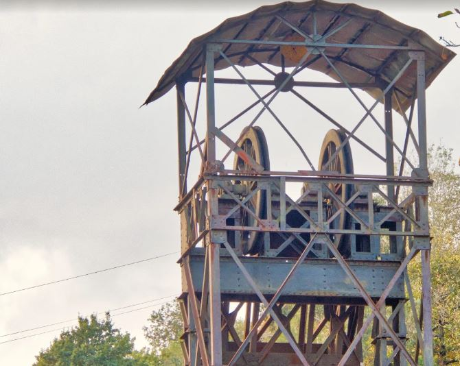
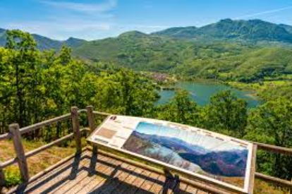
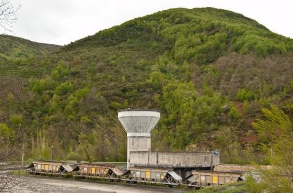
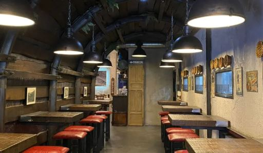

Descubre los paisajes, la historia y la gastronomía de nuestro municipio a través de estas rutas cuidadosamente seleccionadas. Cada una ofrece una experiencia única para conocer diferentes aspectos de nuestro concejo.
Selecciona un archivo XML con información de rutas para visualizarlas:
Información práctica
Antes de emprender cualquier ruta, te recomendamos llevar ropa y calzado adecuados, agua suficiente y consultar la previsión meteorológica. Las rutas están señalizadas, pero siempre es recomendable llevar un mapa o GPS.
La Oficina de Turismo de San Martín del Rey Aurelio ofrece información detallada sobre todas estas rutas y otras actividades disponibles en la zona.
Selecciona una ruta
Elige una de las siguientes rutas para ver toda su información, planimetría y altimetría:
Ruta del Valle y los Pozos Mineros
Información general
Un recorrido por el Valle de Santa Bárbara que permite descubrir el patrimonio industrial minero de San Martín del Rey Aurelio, adentrándose en la historia de la cuenca minera asturiana mientras se disfruta de hermosos paisajes.
Tipo:
Paisajística e histórica
Medio de transporte:
A pie
Fecha de inicio:
domingo, 15 de junio de 2025
Hora de inicio:
09:30
Duración aproximada:
4 horas
Agencia organizadora:
Turismo SMRA
Adecuada para:
Personas en buena forma física
Lugar de inicio:
Plaza del Ayuntamiento de San Martín
Dirección:
Calle La Cuesta, 28
Coordenadas de inicio:
Latitud: 43.275458, Longitud: -5.606585, Altitud: 275 m
Uno de los pozos mineros más emblemáticos de la cuenca del Nalón, con su característica torre de extracción que domina el paisaje. Rehabilitado para visitas turísticas.
Distancia:
1.2 km
Coordenadas:
Lat: 43.279872, Long: -5.605033, Alt: 290m
Contenido multimedia
Galería de fotos

Mirador del Valle
Un punto privilegiado desde donde se puede contemplar todo el valle del Nalón, con sus poblaciones y el contraste entre la naturaleza y el paisaje industrial.
Distancia:
2.5 km
Coordenadas:
Lat: 43.283561, Long: -5.598124, Alt: 450m
Contenido multimedia
Galería de fotos

Antiguo Lavadero de Carbón
Estructura industrial rehabilitada donde se realizaba el lavado del carbón extraído de las minas. Hoy forma parte del patrimonio histórico industrial de la zona.
Distancia:
1.8 km
Coordenadas:
Lat: 43.281248, Long: -5.592759, Alt: 310m
Contenido multimedia
Galería de fotos

Bocamina Restaurada
Entrada a una antigua galería minera que ha sido acondicionada para poder visitar y experimentar cómo era el trabajo en el interior de las minas de carbón.
Distancia:
1.3 km
Coordenadas:
Lat: 43.279015, Long: -5.588124, Alt: 295m
Contenido multimedia
Galería de fotos

Museo de la Minería
Centro cultural que recoge la historia y tradiciones mineras de San Martín del Rey Aurelio, con exposiciones de herramientas, fotografías y recreaciones de la vida minera.